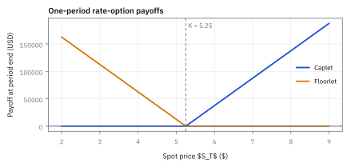
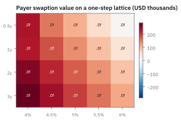

20.4 Caps, Floors, and Swaptions on the Lattice
caplet และ floorlet คือ option บนอัตราของงวดเดียวที่กำหนดวันหนึ่งแต่จ่ายอีกวันหนึ่ง swaption คือสิทธิ์เข้า swap ทั้งสัญญาครั้งเดียว ทั้งหมดตั้งราคาได้บนต้นไม้ของ 20.3 ถ้าวางนาฬิกาของเงินให้ถูก
บริษัทกู้ลอยตัว \$10,000,000 ดอกเบี้ยของงวดครึ่งปีจากปีที่ 1 ถึงปีที่ 1.5 จะกำหนดที่ปีที่ 1 ตาม short rate ของต้นไม้ใน 20.3 (7%, 5% หรือ 3%) และจ่ายที่ปีที่ 1.5 บริษัทอยากซื้อ caplet ที่ strike 5.25% ถ้าอัตราขึ้นเป็น 7% caplet จ่าย \$87,500 เพื่อนคูณด้วย state price ของจุด 7% คือ 0.236621 ได้ราคา \$20,704.36 ถูกไหม?
ลองตอบก่อนเปิดเฉลย
ไม่ถูก state price ย้ายเงินจากปีที่ 1 มาวันนี้ แต่ caplet จ่ายที่ปีที่ 1.5 ต้องคิดลดอีกครึ่งปีด้วยอัตรา 7% ของจุดนั้นก่อน: $87{,}500e^{-0.035}=\$84{,}490.47$ ที่ปีที่ 1 แล้วคูณ 0.236621 ได้ \$19,992.24 เพื่อนแพงไป \$712.12 เพราะนับเงินว่ามาเร็วไปหกเดือน
สิ่งที่เราจะสร้าง
20.3 สร้างต้นไม้ของ short rate และ state price แล้วตั้งราคา option บนพันธบัตร หน้านี้ใช้ต้นไม้เดียวกันกับสัญญาที่ธนาคารขายทุกวัน: cap และ floor ที่จำกัดเพดานหรือพื้นของดอกเบี้ยลอยตัวทีละงวด และ swaption ที่ให้สิทธิ์เข้า swap ของ 20.2 ในอนาคต ความยากไม่ได้อยู่ที่สูตร แต่อยู่ที่นาฬิกา: อัตรากำหนดวันหนึ่ง เงินจ่ายอีกวันหนึ่ง
ลำดับคือ นิยาม caplet และ floorlet ราคาบนต้นไม้ของ 20.3 ความสัมพันธ์ cap–floor ที่ตรวจงานได้โดยไม่ต้องเชื่อแบบจำลอง swaption บนต้นไม้เดียวกัน แล้วย้ายไปต้นไม้ของคอร์สเพื่อตั้งราคา caplet, swap, swaption และ swap ที่เริ่มในอนาคต ปิดด้วย swaption บน BDT สองต้นที่ fit curve เท่ากันแต่ราคาต่างกันเกือบครึ่ง และการ calibrate ในงานจริง
ศัพท์ที่ใช้ในหัวข้อนี้
- Caplet และ cap
- caplet คือ option ของงวดดอกเบี้ยเดียว จ่ายส่วนที่อัตราเกิน strike คูณเงินต้นและความยาวงวด cap คือ caplet หลายงวดที่ strike เดียวกัน ผู้กู้ลอยตัวซื้อเพื่อจำกัดเพดานต้นทุน
- Floorlet และ floor
- ด้านตรงข้ามของ caplet จ่ายเมื่ออัตราต่ำกว่า strike ผู้ให้กู้หรือผู้ถือเงินฝากลอยตัวซื้อเพื่อกันรายรับไม่ให้ต่ำเกินไป
- Reset date และ payment date
- reset date คือวันที่อัตราของงวดถูกกำหนด payment date คือวันที่เงินของงวดนั้นจ่ายจริง ซึ่งมักอยู่ปลายงวด สองวันนี้ต้องแยกกันทุกครั้งที่คิดลด
- Payer และ receiver swaption
- สิทธิ์เข้า swap ในอนาคตที่อัตราคงที่ $K$ payer คือสิทธิ์เป็นฝั่งจ่ายคงที่ มีค่าเมื่อ swap rate ตอนนั้นสูงกว่า $K$ receiver คือกลับกัน ใช้ล็อกต้นทุนของเงินกู้ที่จะเกิดในอนาคต
- Cap–floor parity
- ซื้อ caplet ขาย floorlet ที่ strike เดียวกัน ได้เงินเท่า FRA พอดีทุกกรณี จึงตั้งราคาผลต่างได้จาก curve โดยไม่ต้องใช้แบบจำลองความผันผวน ใช้ตรวจโค้ดตั้งราคา
- Forward-start swap
- swap ที่ตกลงวันนี้แต่เริ่มงวดแรกในอนาคต ตั้งราคาได้ด้วย state price ของทุกจุดที่มันจ่าย
สัญลักษณ์และหน่วย
| สัญลักษณ์ | ความหมาย | หน่วย |
|---|---|---|
| $N,\ \delta,\ K$ | เงินต้น ความยาวงวด และ strike | \$, ปี, ต่อปี |
| $r_j,\ L_j$ | short rate ของจุด $j$ และอัตราที่สัญญาเขียนไว้ว่าจะจ่าย | ต่อปี |
| $Q_j$ | state price ของจุด $j$ ที่วัน reset (จาก 20.3) | \$ วันนี้ต่อ \$ ที่จุดนั้น |
| $P_j$ | ราคาที่วัน reset ของ \$1 ที่จ่ายปลายงวด $=e^{-r_j\delta}$ | \$ ต่อ \$ |
| $A_j,\ S_j$ | annuity และ par swap rate ของ swap ที่จุด $j$ | ปี, ต่อปี |
| $\Pi,\ V_0$ | payoff ของสัญญา และราคาวันนี้ | \$ |
| $E_{i,j}$ | state price บนต้นไม้ของคอร์ส | \$ ต่อ \$ |
ขั้นที่ 1 — caplet และ floorlet: จ่ายเท่าไร และจ่ายเมื่อไร
เริ่มจากนิยามของสัญญา อัตรา $L$ ของงวดถูกกำหนดที่วัน reset $T$ แต่เงินจ่ายที่ปลายงวด $T+\delta$ caplet จ่ายส่วนที่อัตราเกิน strike เฉพาะเมื่อเป็นบวก เพราะเป็นสิทธิ์ ไม่ใช่ภาระ floorlet จ่ายกลับทาง คูณ $\delta$ เพื่อแปลงอัตราต่อปีเป็นอัตราของงวด แล้วคูณเงินต้น
ตัวอย่างของหน้านี้: $N=\$10$ ล้าน $\delta=0.5$ $K=5.25\%$ reset ปีที่ 1 จ่ายปีที่ 1.5 เพื่อให้เห็นกลไกชัด สัญญาสอนนี้จ่ายตาม short rate ของต้นไม้ตรง ๆ คือ $L_j=r_j$ สัญญาจริงจ่ายตามอัตรา simple ของงวด ขั้นที่ 4 จะแปลงให้ดูว่าตัวเลขเปลี่ยนเท่าไร
Figure 20.4a — caplet กับ floorlet ประกบกันที่ strike

แกนนอนคืออัตราของงวด 2% ถึง 9% (141 จุด) แกนตั้งคือ payoff ที่ปลายงวดเป็นดอลลาร์ของ $N=\$10$ ล้าน $\delta=0.5$ เส้นประแนวตั้งคือ strike 5.25% caplet เพิ่ม \$50,000 ต่อทุก 1 จุดที่อัตราเกิน strike floorlet เพิ่มเท่ากันในทางกลับ ที่ 9% caplet จ่าย \$187,500 ที่ 2% floorlet จ่าย \$162,500
ขั้นที่ 2 — ราคา caplet: คิดลดสองช่วง ช่วงหนึ่งอยู่ใน state price อีกช่วงต้องใส่เอง
state price ของ 20.3 ย้ายเงินจากวัน reset (ปีที่ 1) มาวันนี้ แต่ caplet จ่ายที่ปีที่ 1.5 เงินก้อนนั้นรู้ค่าแน่นอนตั้งแต่ปีที่ 1 จึงคิดลดครึ่งปีด้วยอัตราของจุดนั้นเองก่อน แล้วค่อยคูณ state price
จุด 5% และ 3% ไม่เกิน strike จึงจ่ายศูนย์ มีแค่จุด 7% ที่เหลือ การคิดลดช่วง 1 ถึง 1.5 ใช้อัตรา 7% ของจุดนั้น ไม่ใช่อัตราวันนี้ เพราะในโลกที่อัตราขึ้นเป็น 7% เงินครึ่งปีหลังก็ถูกคิดลดด้วย 7%
ถ้าลืมช่วงที่สองจะได้ \$20,704.36 แบบโจทย์เปิดหน้า แพงไปเสมอ ไม่ใช่แพงบ้างถูกบ้าง ความผิดชนิดนี้มองไม่เห็นจนกว่าจะเทียบกับตลาด
ขั้นที่ 3 — floorlet ที่ strike เดียวกัน
โจทย์ให้อะไรมาบ้าง: สัญญาเดียวกับขั้นที่ 2 แต่จ่าย $N\delta(K-L)^+$ state price ของจุด 7%, 5% และ 3% คือ 0.236621, 0.475621 และ 0.238999
คำตอบ: \$32,285.60 จุด 7% ไม่จ่าย จุด 5% จ่ายน้อย ($10^7(0.5)(0.0025)$) และจุด 3% จ่ายเก้าเท่าของจุด 5% จึงเป็นที่มาของมูลค่า 82% floorlet แพงกว่า caplet ที่ strike เดียวกันเพราะ strike 5.25% อยู่สูงกว่ากลางต้นไม้
ตรวจเองใน 10 วินาที: $10^7(0.5)(0.0525-0.03)=112{,}500$ และคูณ state price ราว 0.24 กับ discount ราว 0.985 ได้ราว \$26,500
Figure 20.4b — มูลค่ามาจากจุดไหนของต้นไม้

แท่งน้ำเงินคือส่วนของ caplet: \$19,992.24 ทั้งหมดจากจุด 7% แท่งเขียวคือส่วนของ floorlet ที่จุด 5% และ 3% ภาพใช้ 5,797.8 และ 26,487.8 ซึ่งคลาดจากค่าที่คำนวณได้ 5,798.47 และ 26,487.13 ไม่ถึงหนึ่งดอลลาร์ (ปัดตัวเลขตอนวาด) ราคาเดียวซ่อนว่าความเสี่ยงอยู่ที่ปลายไหนของต้นไม้ ภาพแบบนี้บอกได้
ขั้นที่ 4 — cap–floor parity และสัญญาที่จ่ายอัตรา simple
ซื้อ caplet ขาย floorlet ที่ strike เดียวกัน ไล่สองกรณี: อัตราเกิน strike ได้ $L-K$ จากตัวแรก อัตราต่ำกว่าจ่าย $K-L$ ให้ตัวที่สอง ซึ่งคือได้ $L-K$ ที่ติดลบ ทุกกรณีได้ $L-K$ เป็นเส้นตรง ถ้าสัญญาจ่ายอัตรา simple $L_j=(1/P_j-1)/\delta$ แบบตลาดจริง ผลต่างนี้คือ FRA ของ 20.1 ซึ่งตั้งราคาได้จาก curve อย่างเดียว
สัญญาสอน (จ่าย $r_j$) ให้ผลต่าง −12,293.36 ซึ่งตรงกับ $\sum_jQ_jP_jN\delta(r_j-K)$ แต่ $r_j$ ไม่ใช่อัตราที่ซื้อขายได้ ผลต่างจึงยังขึ้นกับต้นไม้ สัญญาตลาดจ่าย $L_j$ = 7.1239%, 5.0630% และ 3.0226% ได้ caplet \$21,408.17 และ floorlet \$30,557.62
ผลต่าง −9,149.45 เท่ากับแถวสุดท้ายซึ่งใช้แค่ $D(0,1)=0.951241$ และ $D(0,1.5)=0.927801$ ไม่มีความผันผวนเลย ถ้าโค้ดให้ผลต่างอื่น แปลว่ามีบั๊กเรื่องเครื่องหมาย วันจ่าย หรือกติกาอัตรา
Figure 20.4c — strike ย้ายมูลค่าจาก caplet ไป floorlet

แกนนอนคือ strike 3% ถึง 7% (81 จุด) แกนตั้งคือราคาวันนี้เป็นพันดอลลาร์ บนต้นไม้ของ 20.3 กับสัญญาสอนที่จ่าย $r_j$ ที่ 5.25% ได้ 19.99 และ 32.29 caplet ลดลงและ floorlet เพิ่มขึ้นด้วยความชันต่างกันคงที่ ($N\delta$ คูณผลบวกของ $Q_jP_j$ คือ \$46,390 ต่อทุก 1 จุด) สองเส้นตัดกันที่ strike 4.985% ซึ่งทำให้ผลต่างของขั้นที่ 4 เป็นศูนย์
ขั้นที่ 5 — payer swaption: ตัดสินใจครั้งเดียวกับ swap ทั้งสัญญา
swaption ที่ปีที่ 1 ให้สิทธิ์เข้า swap อายุ 1 ปี จ่ายคงที่ $K=5.25\%$ รับลอยตัวทุกครึ่งปี ที่วันใช้สิทธิ์ swap ทั้งสัญญามีค่าเท่าส่วนต่างของ swap rate ตลาดกับ $K$ คูณ annuity ของ 20.2 เพื่อให้คิดด้วยมือได้ สมมติว่าหลังวันใช้สิทธิ์ curve แบนที่อัตราของจุดนั้น
$S_j$ มาจากขั้นที่ 4 ของ 20.2 ตรง ๆ จุดกลางและจุดล่างได้ 5.0630% และ 3.0226% ต่ำกว่า $K$ จึงไม่ใช้สิทธิ์ บนเส้นแบนที่มีสองงวด swap rate เท่ากับอัตรา simple ของงวดเดียวพอดี ตัวเลขจึงตรงกับ $L_j$ ของขั้นที่ 4 payoff อยู่ที่วันใช้สิทธิ์แล้ว จึงคูณ state price ได้เลยโดยไม่คิดลดเพิ่ม
receiver swaption ที่ $K$ เดียวกันจ่ายที่จุด 5% และ 3% ได้ \$60,617.79 ผลต่าง payer ลบ receiver คือ −18,537.77 เท่ากับมูลค่าวันนี้ของ swap ที่เริ่มปีที่ 1 แบบเดียวกับ parity ของขั้นที่ 4
Figure 20.4d — ใช้สิทธิ์เฉพาะจุดที่ swap rate เกิน strike

แท่ง (แกนซ้าย) คือ payoff ที่วันใช้สิทธิ์: \$177,837 ที่จุดอัตราสูง ศูนย์ที่จุดกลางและจุดล่าง เส้นประจุดกลม (แกนขวา) คือ swap rate ของสามจุด 7.12394, 5.06302 และ 3.02261% เส้นจุดแนวนอนคือ strike 5.25% ถ้าใช้สิทธิ์ได้หลายวัน (แบบอเมริกันหรือ Bermudan) ต้องเทียบใช้ทันทีกับถือต่อแบบ put ใน 20.3 ทุกวันที่ใช้สิทธิ์ได้
Figure 20.4e — strike และอายุเปลี่ยนราคา payer swaption พร้อมกัน

ภาพประกอบแนวคิดจากต้นไม้หนึ่งขั้นที่สมมติ ไม่ได้ calibrate: swap rate ขึ้นเป็น $5.2\%+1.2\%\sqrt T$ หรือลงเป็น $5.2\%-1.2\%\sqrt T$ (ไม่ต่ำกว่าศูนย์) ครึ่งต่อครึ่ง annuity $2e^{-0.045T}$ และ $N=\$10$ ล้าน แถวคืออายุ 0.5, 1, 2 และ 3 ปี คอลัมน์คือ strike 4% ถึง 6% ค่าเป็นพันดอลลาร์ เช่น 234.7 ที่ 0.5 ปี strike 4% และ 4.7 ที่ strike 6% ส่วน 3 ปีได้ 286.4 ถึง 111.7 ข้อบกพร่องของภาพ: ทุกช่องพิมพ์ “.0f” แทนตัวเลข (บั๊กรูปแบบตัวเลขเดียวกับ Figure 20.1a) ให้อ่านค่าจากคำบรรยายนี้
ขั้นที่ 6 — ต้นไม้ของคอร์ส: caplet strike 2% ที่จ่ายงวดที่ 6
ย้ายไปต้นไม้ของคอร์สใน 20.3 (6% ขึ้นคูณ 1.25 ลงคูณ 0.9 ทบต่องวด) caplet จ่าย $(r_5-0.02)^+$ ต่อเงินต้น \$1 ที่งวดที่ 6 อัตรา $r_5$ รู้ตั้งแต่งวดที่ 5 จึงคิดลดหนึ่งงวดด้วยอัตราของจุดงวดที่ 5 ก่อน แล้วเดินย้อนตามปกติ
จุดล่างสุดของงวดที่ 5 มีอัตรา 3.54% ยังสูงกว่า strike 2% caplet นี้จึงจ่ายทุกกรณี จุดบนสุด (18.31%) ได้ 0.1379 ต่อ \$1 ราคาวันนี้ 0.0420 ต่อ \$1 หรือ \$42,045 ต่อเงินต้น \$1 ล้าน
ขั้นที่ 7 — swap ของคอร์ส และ cap ลบ floor เท่ากับ swap
swap หกงวด จ่ายคงที่ 5% รับลอยตัว งวดที่ $i+1$ ได้ $r_{i,j}-0.05$ ซึ่งรู้ตั้งแต่งวด $i$ บันทึกที่จุดงวด $i$ คิดลดหนึ่งงวด แล้วบวกค่าเฉลี่ยของสองลูก $\bar V_{i+1}$ ที่คิดลดแล้วด้วย
ในแถวของ $V_{2,2}$ ตัวเลข 0.04375 คือ $9.375\%-5\%$ และ 0.28133 คือผลบวกของสองลูก 0.17927 กับ 0.10206 ต้นไม้นี้ลอยสูงกว่า 5% เป็นส่วนใหญ่ ฝั่งรับลอยตัวจึงได้เปรียบ 0.0990 ต่อ \$1 จุดล่างสุดของงวดที่ 3 ติดลบ (−0.0085) เพราะอัตรา 4.37% ต่ำกว่า 5%
cap ที่ strike 5% บนหกงวดเดียวกันมีราคา 0.100902 floor มีราคา 0.001898 ลบกันได้ 0.099004 เท่ากับ swap ทุกหลัก นี่คือ parity ของขั้นที่ 4 ต่อกันทุกงวด ถ้า strike เท่ากับ swap rate ตลาด swap มีค่าศูนย์ และ cap กับ floor ต้องราคาเท่ากัน
ขั้นที่ 8 — swaption ของคอร์สที่งวดที่ 3 และทำไมไม่แพงกว่า cap
โจทย์ให้อะไรมาบ้าง: สิทธิ์เข้า swap ของขั้นที่ 7 ที่งวดที่ 3 โดยไม่ต้องจ่ายอะไรตอนเข้า ครอบเงินงวดที่ 4 ถึง 6 ค่า swap ที่งวดที่ 3 คือ −0.0085, 0.0400, 0.1021 และ 0.1793 (อัตราต่ำไปสูง) ก่อนใช้สิทธิ์ผู้ถือยังไม่ได้เงินของ swap จึงเดินย้อนโดยไม่บวกเงินรายงวด
คำตอบ: swaption ราคา 0.0620 ต่อ \$1 cap ที่ strike 5% บนสามงวดเดียวกันราคา 0.0627 แพงกว่า \$695.67 ต่อ \$1 ล้าน เหตุผลอยู่ในแถวสุดท้าย: ที่วันใช้สิทธิ์ ให้ $X_i$ คือค่าของเงินงวดที่ $i$ ของ swap caplet แต่ละตัวมีค่าอย่างน้อย $X_i^+$ ส่วน swaption ได้แค่ $(\sum X_i)^+$ ซึ่งไม่เกินผลบวกของส่วนบวก cap เลือกได้ทีละงวด swaption ต้องรับทั้งงวดดีและงวดแย่ในครั้งเดียว ส่วนต่างเล็กในตัวอย่างนี้เพราะที่จุดส่วนใหญ่ทุกงวดของ swap เป็นบวกอยู่แล้ว
ตรวจเองใน 10 วินาที: ที่งวดที่ 2 จุดบน: $\tfrac12(0.1793+0.1021)/1.0938=0.1286$ และ swaption ต้องไม่แพงกว่าการได้ swap ฟรีซึ่งมีค่า 0.0990
ขั้นที่ 9 — swap ที่เริ่มในอนาคต: คูณ state price ได้เลย
swap เริ่มงวดที่ 1 จบงวดที่ 3 เงินต้น \$1,000,000 รับคงที่ 7% จ่ายลอยตัว เงินงวดที่ 2 และ 3 ใช้อัตราของงวดที่ 1 และ 2 เงินแต่ละก้อนรู้ค่าก่อนหนึ่งงวด จึงคิดลดหนึ่งงวดด้วยอัตราของจุดนั้นแล้วคูณ state price $E_{i,j}$ ของ 20.3 ไม่ต้องเดินย้อนทั้งต้นไม้
ห้าจุดคือ งวดที่ 1 อัตรา 5.40% และ 7.50% (state price 0.4717 ทั้งคู่) และงวดที่ 2 อัตรา 4.86%, 6.75% และ 9.375% (state price 0.2238, 0.4432 และ 0.2194) จุดที่อัตราเกิน 7% ติดลบสำหรับฝั่งรับคงที่ ผลรวม \$5,807.06 ถ้าปัดเป็นหลักร้อยได้ \$5,800 และถ้าใช้ 9.38% แทน 9.375% จะได้ \$5,797
ขั้นที่ 10 — swaption บน BDT สองต้นที่ fit curve เท่ากัน และการ calibrate ในงานจริง
ต้นไม้ BDT ของ 20.3 fit เส้น spot 10 ปีเดียวกันพอดีทั้งที่ $b=0.005$ และ $b=0.01$ ตั้งราคาสิทธิ์ที่ปีที่ 2 จะเข้า swap 8 ปี จ่ายคงที่ 11.65% รับลอยตัว (เงินปีที่ 3 ถึง 10 ใช้อัตราของปีก่อนหน้า) บนเงินต้น \$1 ล้าน แล้วดูว่างานจริงเลือกพารามิเตอร์อย่างไร
สองต้นไม้ให้ราคา zero ทั้งสิบตัวตรงตลาด แต่ swaption ต่างกัน 46.5% เพราะ option ขึ้นกับความผันผวน ซึ่งราคา zero ไม่บอกเลย ตัวที่ใช้ calibrate จึงต้องหน้าตาใกล้ของที่จะตั้งราคา จะตั้งราคา swaption ต้อง calibrate กับ cap, floor หรือ swaption
งานจริงเลือกพารามิเตอร์ $\theta$ ด้วย $J(\theta)$: $w_i$ ให้น้ำหนักตามสภาพคล่อง $\lambda$ ลงโทษการขยับจากค่าเมื่อวาน ตัวอย่างของเล่น: ราคาตลาด 1.10 และ 1.20 ค่าเมื่อวาน 1.00 และราคาแบบจำลองเท่ากับ $\theta$ ถ้า $\lambda=0$ ได้ $\theta=1.15$ ถ้า $\lambda=1$ ได้ $(1.10+1.20+1.00)/3=1.10$
ปัญหาจริงไม่ convex มีจุดต่ำสุดเฉพาะที่หลายจุด (12.1) และต้อง calibrate ใหม่หลายครั้งต่อวัน ถ้าแบบจำลองถูกจริงจะ calibrate ครั้งเดียวพอ การตั้งราคาอนุพันธ์จึงเป็นการเติมราคาจากของที่ซื้อขายคล่องไปหาของที่ไม่คล่องโดยไม่เปิดช่องเงินฟรี
คำถามที่ควรถามออกมาดัง ๆ
ทำไมผู้กู้ไม่ซื้อ swap ไปเลย? swap ล็อกอัตราทั้งขาขึ้นและขาลง ถ้าอัตราลง ผู้กู้ไม่ได้ประโยชน์ cap ป้องกันขาขึ้นอย่างเดียวและเก็บขาลงไว้ แลกกับเงินที่จ่ายวันนี้ ในขั้นที่ 7 cap ราคา 0.1009 ต่อ \$1 ขณะที่ swap ที่ strike เดียวกันมีค่า 0.0990 ส่วนต่าง 0.0019 คือราคาของขาลงที่เก็บไว้ ซึ่งเท่ากับ floor
ทำไมซื้อ swaption แทน cap? เพราะถูกกว่า (ขั้นที่ 8) ถ้าสิ่งที่ต้องป้องกันคือการต้องทำ swap ทั้งสัญญาในอนาคต เช่น บริษัทที่รู้ว่าจะออกหุ้นกู้ในสองปี swaption ตรงกับความเสี่ยงนั้นพอดี ส่วน cap จ่ายเพิ่มสำหรับการเลือกทีละงวดซึ่งบริษัทไม่ต้องการ
ใช้ Black formula แทนต้นไม้ได้ไหม? ตลาด quote cap และ swaption ด้วยความผันผวนของสูตรแบบ Black ต่อ caplet หรือ swaption แต่ละตัว ต้นไม้มีข้อดีคือใช้ได้กับสิทธิ์ที่ใช้ได้หลายวันและให้ราคาทุกตัวจากแบบจำลองเดียวที่ fit curve อยู่แล้ว
ความผิดที่ให้คำตอบผิดแบบเงียบ ๆ
จ่าย caplet ที่วัน reset: ข้ามการคิดลดครึ่งปีได้ \$20,704.36 แทน \$19,992.24 แพงไป \$712.12 ทุกครั้ง
สับสนอัตราของต้นไม้กับอัตราในสัญญา: สัญญาที่จ่ายอัตรา simple มี caplet \$21,408.17 ไม่ใช่ \$19,992.24 ต่างกัน \$1,415.93 เพราะที่จุด 7% อัตรา simple คือ 7.1239%
ลืม annuity ของ swaption: ใช้ $N(S-K)^+$ แทน $NA(S-K)^+$ ได้ \$44,341.45 แทน \$42,080.02 ส่วนต่างของอัตราจ่ายหลายงวดในอนาคต ต้องคิดลดทุกงวด
บวกเงินของ swap ก่อนวันใช้สิทธิ์: ถ้าเดินย้อนจากงวดที่ 3 แล้วบวกเงินรายงวดด้วย ได้ 0.0999 แทน 0.0620 แพงไป \$37,936 ต่อ \$1 ล้าน ผู้ถือสิทธิ์ยังไม่ได้เงินเหล่านั้น
calibrate กับ curve อย่างเดียว: $b=0.005$ กับ $b=0.01$ fit curve เท่ากันแต่ swaption ต่างกัน \$622.36 ต่อ \$1 ล้าน หรือ 46.5%
ใช้ทำอะไรบนโต๊ะจริง
ธนาคารขาย cap ให้บริษัทที่กู้ลอยตัว และขาย floor ให้ผู้ที่มีรายรับลอยตัว swaption ใช้กับบริษัทที่จะกู้ในอนาคต และกับพันธบัตรหรือเงินกู้ที่ไถ่ถอนก่อนได้ ซึ่งมีสิทธิ์แบบ swaption ฝังอยู่ โต๊ะเก็บวัน reset วันจ่าย และวันใช้สิทธิ์แยกกันในระบบ ตรวจ parity ตรวจว่าราคาไม่ติดลบ ตรวจว่าราคาไม่เปลี่ยนเมื่อซอยงวดถี่ขึ้น แล้วรายงานความไวต่อ curve ความผันผวน และ strike แยกกัน
สามโจทย์ตรวจความเข้าใจ
1. บนต้นไม้ของ 20.3 caplet ที่ strike 4.5% (สัญญาสอน จ่าย $r_j$) ราคาเท่าไร?
เฉลย
จุด 7%: $10^7(0.5)(0.025)=125{,}000$ จุด 5%: $10^7(0.5)(0.005)=25{,}000$ ราคา $0.236621(0.965605)(125{,}000)+0.475621(0.975310)(25{,}000)=28{,}560.35+11{,}596.94=\$40{,}157.29$
2. ใช้ parity ของขั้นที่ 4 กับสัญญาที่จ่ายอัตรา simple: ถ้า caplet ราคา \$21,408.17 floorlet ต้องราคาเท่าไร โดยไม่ต้องเดินต้นไม้?
เฉลย
$F_L=C_L-N[D(0,1)-(1+\delta K)D(0,1.5)]=21{,}408.17+9{,}149.45=\$30{,}557.62$ ใช้แค่ $D(0,1)=0.951241$ และ $D(0,1.5)=0.927801$ ตรงกับการเดินต้นไม้
3. บนต้นไม้ของคอร์ส ถ้ารู้แค่ว่า cap ที่ strike 5% บนหกงวดราคา 0.100902 ต่อ \$1 และ swap จ่ายคงที่ 5% ของขั้นที่ 7 มีค่า 0.099004 floor ที่ strike เดียวกันราคาเท่าไร?
เฉลย
parity ทุกงวด: cap − floor = swap จึงได้ floor $=0.100902-0.099004=0.001898$ ต่อ \$1 หรือ \$1,898 ต่อ \$1 ล้าน ตรงกับการเดินต้นไม้ทีละ floorlet floor ถูกมากเพราะต้นไม้นี้ต่ำกว่า 5% แค่ที่จุดล่าง ๆ ไม่กี่จุด ซึ่งมี state price น้อย
คำนวณซ้ำด้วย JavaScript
โค้ดนี้ตั้งราคา caplet และ floorlet บนต้นไม้ของ 20.3 ทั้งสัญญาสอนและสัญญาที่จ่ายอัตรา simple ตรวจ parity กับ curve ตั้งราคา payer และ receiver swaption สร้างต้นไม้ของคอร์สแล้วตั้งราคา caplet, swap, cap, floor, swaption และ swap ที่เริ่มในอนาคต และ calibrate BDT สองค่า $b$ เพื่อตั้งราคา swaption 2 ต่อ 8 ปี แล้วพิมพ์ตัวเลขหลักหนึ่งบรรทัด
const {exp, max} = Math;
function states(Q, r) {
if (!Array.isArray(Q) || !Array.isArray(r) || Q.length !== r.length || Q.length === 0) throw new TypeError('state prices and rates must be arrays of the same non-zero length');
if (Q.some(q => !(q > 0))) throw new RangeError('state prices must be positive');
return Q;
}
// One-period rate option on the toy tree: rate fixed at the reset layer, paid delta later, discounted with the node rate.
function rateOption(Q, r, {N, delta, K, kind, simple = false}) {
states(Q, r);
if (!(N > 0 && delta > 0)) throw new RangeError('notional and accrual must be positive');
const P = r.map(x => exp(-x * delta)); // value at reset of $1 paid at period end
const L = simple ? P.map(p => (1 / p - 1) / delta) : r; // rate written in the contract
const pay = L.map(l => N * delta * (kind === 'cap' ? max(l - K, 0) : kind === 'floor' ? max(K - l, 0) : l - K));
const parts = pay.map((x, j) => Q[j] * P[j] * x);
return {L, pay, parts, value: parts.reduce((s, x) => s + x, 0)};
}
// Swaption on a two-payment half-yearly swap starting at the exercise layer, curve flat at the node rate after exercise.
function swaption(Q, r, {N, K, payer = true}) {
states(Q, r);
const A = r.map(x => 0.5 * exp(-0.5 * x) + 0.5 * exp(-x));
const S = r.map((x, j) => (1 - exp(-x)) / A[j]);
const pay = S.map((s, j) => N * A[j] * max(payer ? s - K : K - s, 0));
return {A, S, pay, value: pay.reduce((s, x, j) => s + x * Q[j], 0)};
}
// Course lattice (per-period compounding, q = 1/2), j counts up moves.
const tree = (r0, u, d, n) => Array.from({length: n}, (_, i) => Array.from({length: i + 1}, (_, j) => r0 * u ** j * d ** (i - j)));
const step = (R, i, V, cash = () => 0) => R[i].map((x, j) => (cash(x) + 0.5 * (V[j] + V[j + 1])) / (1 + x));
// Value today of a payment f(r_i) made at i + 1 and fixed at layer i (recorded at layer i, then rolled back).
function inArrears(R, i, f) {
let V = R[i].map(x => f(x) / (1 + x));
for (let k = i - 1; k >= 0; k--) V = step(R, k, V);
return V[0];
}
function swapLayers(R, K) {
const last = R.length - 1, out = [];
let V = R[last].map(x => (x - K) / (1 + x)); out[last] = V;
for (let i = last - 1; i >= 0; i--) { V = step(R, i, V, x => x - K); out[i] = V; }
return out;
}
function forwardStateprices(R, n) {
const E = [[1]];
for (let k = 0; k < n; k++) {
const next = Array(k + 2).fill(0);
E[k].forEach((e, j) => { const v = e / (2 * (1 + R[k][j])); next[j] += v; next[j + 1] += v; });
E.push(next);
}
return E;
}
// BDT (per-period, b fixed) calibrated to a spot curve, then a payer swaption: exercise at `expiry`, payments expiry + 1 .. n.
function bdtSwaption(spot, b, K, expiry) {
let E = [1]; const R = [];
spot.forEach((s, i) => {
const target = (1 + s) ** -(i + 1);
let lo = 0, hi = 1;
for (let k = 0; k < 200; k++) {
const m = (lo + hi) / 2;
if (E.reduce((sum, e, j) => sum + e / (1 + m * exp(b * j)), 0) > target) lo = m; else hi = m;
}
R.push(E.map((_, j) => (lo + hi) / 2 * exp(b * j)));
const next = Array(i + 2).fill(0);
E.forEach((e, j) => { const v = e / (2 * (1 + R[i][j])); next[j] += v; next[j + 1] += v; });
E = next;
});
let V = R[R.length - 1].map(x => (x - K) / (1 + x));
for (let i = R.length - 2; i >= expiry; i--) V = step(R, i, V, x => x - K);
let W = V.map(v => max(v, 0));
for (let i = expiry - 1; i >= 0; i--) W = step(R, i, W);
return W[0];
}
// Toy tree of 20.3 at year 1 (rates 7%, 5%, 3%; state prices from the forward equations).
const Q = [0.23662128698837095, 0.47562065744664594, 0.23899937045827496], r = [0.07, 0.05, 0.03];
const deal = {N: 1e7, delta: 0.5, K: 0.0525};
const cap = rateOption(Q, r, {...deal, kind: 'cap'}), floor = rateOption(Q, r, {...deal, kind: 'floor'});
const capL = rateOption(Q, r, {...deal, kind: 'cap', simple: true}), floorL = rateOption(Q, r, {...deal, kind: 'floor', simple: true});
const D1 = Q.reduce((s, q) => s + q, 0), D15 = Q.reduce((s, q, j) => s + q * exp(-r[j] * 0.5), 0);
const strikeMid = Q.reduce((s, q, j) => s + q * exp(-r[j] * 0.5) * r[j], 0) / D15;
// Course tree: 6%, up x1.25, down x0.9, six layers.
const R = tree(0.06, 1.25, 0.9, 6);
const sw = swapLayers(R, 0.05);
let W = sw[3].map(v => max(v, 0)); for (let i = 2; i >= 0; i--) W = step(R, i, W);
const capOn = (from, K) => [0, 1, 2, 3, 4, 5].filter(i => i >= from).reduce((s, i) => s + inArrears(R, i, x => max(x - K, 0)), 0);
const floorAll = [0, 1, 2, 3, 4, 5].reduce((s, i) => s + inArrears(R, i, x => max(0.05 - x, 0)), 0);
const E = forwardStateprices(R, 2);
const fwdStart = [1, 2].reduce((s, i) => s + R[i].reduce((t, x, j) => t + (0.07 - x) / (1 + x) * E[i][j], 0), 0);
const spot = [7.30, 7.62, 8.10, 8.45, 9.20, 9.64, 10.12, 10.45, 10.75, 11.22].map(x => x / 100);
const b005 = bdtSwaption(spot, 0.005, 0.1165, 2), b01 = bdtSwaption(spot, 0.01, 0.1165, 2);
console.log(JSON.stringify({
cap, floor, parity: cap.value - floor.value, swaplet: rateOption(Q, r, {...deal, kind: 'swap'}).value,
resetDateMistake: Q[0] * cap.pay[0], market: {L: capL.L, cap: capL.value, floor: floorL.value, parity: capL.value - floorL.value,
curve: 1e7 * (D1 - (1 + 0.5 * 0.0525) * D15), D1, D15, forward: (D1 / D15 - 1) / 0.5}, strikeMid,
payer: swaption(Q, r, {N: 1e7, K: 0.0525}), receiver: swaption(Q, r, {N: 1e7, K: 0.0525, payer: false}).value,
course: {caplet: inArrears(R, 5, x => max(x - 0.02, 0)), capletTop: max(R[5][5] - 0.02, 0) / (1 + R[5][5]),
swap: sw[0][0], swap3: sw[3], swap2top: sw[2][2], swaption: W[0], cap456: capOn(3, 0.05), capAll: capOn(0, 0.05), floorAll,
fwdStart: 1e6 * fwdStart, E1: E[1], E2: E[2]},
bdt: {b005: 1e6 * b005, b01: 1e6 * b01, ratio: b01 / b005},
calibration: {noAnchor: (1.10 + 1.20) / 2, anchored: (1.10 + 1.20 + 1.00) / 3}
}));ที่มาที่ไป
บริษัทที่กู้ลอยตัวกังวลว่าอัตราขึ้นแรงแล้วจ่ายไม่ไหว แต่ไม่อยากล็อกอัตราคงที่เพราะจะเสียโอกาสถ้าอัตราลง cap ตอบความต้องการนั้นตรง ๆ และกลายเป็นสินค้ามาตรฐานของธนาคารตั้งแต่ตลาด swap โตในทศวรรษ 1980 ตลาด quote cap และ swaption ด้วยความผันผวนของสูตรแบบ Black ซึ่ง Fischer Black เสนอในปี 1976 สำหรับ option บน futures ส่วนต้นไม้ของ 20.3 ใช้กับสิทธิ์ที่ใช้ได้หลายวัน
ข้อจำกัด: วิธีนี้สมมติอะไร และของจริงเป็นอย่างไร
| สมมติอะไร | ของจริง | ผลเวลาใช้งาน |
|---|---|---|
| สัญญาสอนจ่ายตาม short rate ของต้นไม้ | สัญญาจ่ายอัตรา simple ของงวดตามกติกานับวัน | ราคาต่างกันหลักพันดอลลาร์ต่อ \$10 ล้าน (ขั้นที่ 4) |
| curve แบนหลังวันใช้สิทธิ์ swaption | ต้องตีราคา swap ที่เหลือบนต้นไม้ทั้งต้น | ตัวอย่างของเล่นใช้ได้แค่ดูกลไก ต้นไม้ของคอร์สในขั้นที่ 8 ทำแบบเต็ม |
| ความผันผวนตัวเดียว (หรือ $b$ ตัวเดียว) | ตลาดให้ความผันผวนต่างกันตามอายุและ strike (smile) | ต้องเลือกตราสาร calibrate ที่ใกล้ของที่จะตั้งราคา |
| ปัจจัยเดียว | swaption ขึ้นกับ correlation ของอัตราหลายอายุ (20.2) | swaption อายุยาวอาจถูกตั้งราคาผิดแม้ caplet ตรงตลาด |
สิ่งที่ควรตอบได้หลังอ่าน
- caplet กำหนดอัตราที่วัน reset แต่จ่ายปลายงวด ราคาคือ state price ถึงวัน reset คูณ discount ของงวดสุดท้ายด้วยอัตราของจุดนั้น: \$19,992.24 ไม่ใช่ \$20,704.36
- floorlet ที่ strike เดียวกันราคา \$32,285.60 และ caplet ลบ floorlet เท่ากับ FRA ซึ่งตั้งราคาได้จาก curve อย่างเดียว (−9,149.45 สำหรับสัญญาที่จ่ายอัตรา simple)
- swaption จ่าย $NA(S-K)^+$ ที่วันใช้สิทธิ์: \$42,080.02 บนต้นไม้เดียวกัน และไม่แพงกว่า cap บนงวดเดียวกัน (0.0620 เทียบ 0.0627 บนต้นไม้คอร์ส)
- บนต้นไม้ของคอร์ส caplet strike 2% ราคา 0.0420 swap จ่ายคงที่ 5% มีค่า 0.0990 เท่ากับ cap ลบ floor และ swap ที่เริ่มในอนาคตมีค่า \$5,807
- ต้นไม้สองต้นที่ fit curve เท่ากันให้ swaption \$1,339 กับ \$1,962 ความผันผวนต้อง calibrate กับ option ด้วย least squares ที่มีน้ำหนักและตัวถ่วง
20.5 เปลี่ยนจากต้นไม้เป็นแบบจำลองเวลาต่อเนื่อง Vasicek และ CIR ของ 13.4 แล้ว calibrate กับอัตราตลาดจริงของสองวัน ดูว่าพารามิเตอร์สี่ตัว fit curve ได้แค่ไหน และส่วนที่เหลือบอกอะไร